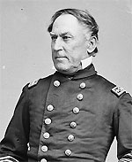

|

|

|
|
|
Widely admired for his innovative tactics and operational
skills, Union admiral David Glasglow Farragut was born near
Knoxville, Tennessee on July 5, 1801. The family moved to
New Orleans in 1807, where Farragut's mother died. After his
father enlisted in the Navy, Commander David Porter (head of
the New Orleans naval station) adopted the boy. Destined for
the sea, the 9-year-old Farragut began working as a
midshipman with the U.S. navy department. Most of his youth
was spent on board various ships in the Pacific, the
Mediterranean and the West Indies, and he saw action in the
War of 1812. Farragut assumed his first naval command in
1842, and during the Mexican War he commanded the Saratoga.
Farragut's loyalty was questioned early in the Civil War,
but he remained steadfastly attached to the Union. To his
secessionist friends, Farragut said: "Mind what I tell you.
You fellows will catch the devil before you get through with
this business." In January of 1862 he was placed in charge
of the West Gulf Blockading Squadron with two goals in mind.
The first was to assure Union control the Mississippi River
and the second was to take the South's greatest port city,
New Orleans.
Farragut captured New Orleans in a dazzling display of
Union naval power. After passing the heavily armed Fort
Jackson and Fort Saint Phillip, and defeating Confederate
defenses, Farragut arrived at New Orleans on April 25, 1862.
The victory, a rare bloodless affair, was critical to
controlling Louisiana, and the Mississippi River. Now a rear
admiral, he turned his attention to the "river war." In June
and July of 1862, Farragut attempted to fight the Vicksburg
defenses for the Mississippi above Port Hudson, but to no
avail. He returned to the Gulf Coast to implement and
strengthen the naval blockade from August to February 1863.
In March, Farragut's ships attacked the batteries at Port
Hudson, Louisiana. By July and August of 1863, the
Mississippi River was under Union control.
Perhaps his finest moment as a naval strategist came on
August 5, 1864 at the Battle of Mobile in Alabama. Three
impressive forts protected the last major port still in
Confederate hands. Farragut sailed eighteen ships into
Mobile Bay and smashed into the enemy fleet. At this point
Farragut was so afflicted with vertigo that he had himself
lashed to the rigging of his flagship, the Hartford.
It was at this battle that he uttered his immortal phrase.
After a mine (called torpedoes during the Civil War) had
sunk one of the ships ahead of Farragut's, several men
expressed great reservations about proceeding. Farragut
responded by saying "Damn the torpedoes, full speed ahead!"
The Confederate fleet surrendered and Farragut had another
magnificent victory to his credit.
Farragut was promoted twice after the war, making him the
Navy's first four-star admiral. He died at age 69 in
Portsmouth, New Hampshire on August 14, 1870.
Source: Joan Waugh, ed., Facts on File Encyclopedia of American
History: Civil War and Reconstruction, 1856 to 1869 (New York: Facts on
File, 2003), 121-122.
|